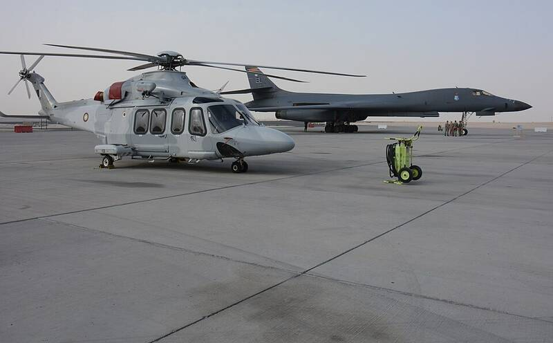

Al Udeid Air Base
Qatar

The largest U.S. military base in the Middle East. 1
Open in the interactive Watcher
Sources
- Al Udeid Air Base Wikipedia
Qatar

The largest U.S. military base in the Middle East. 1
Open in the interactive Watcher